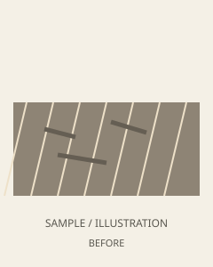
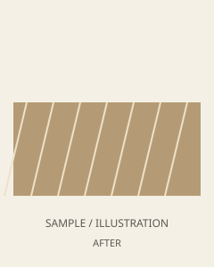
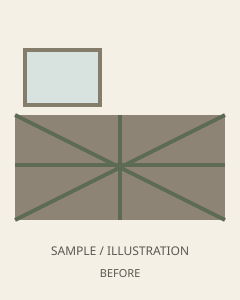
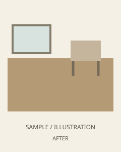
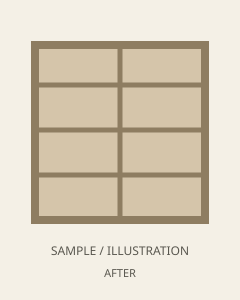
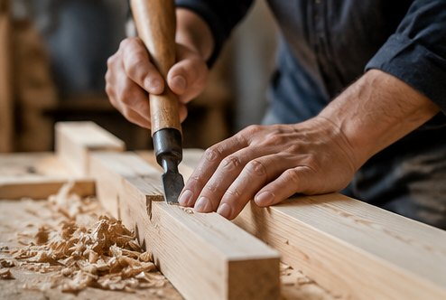
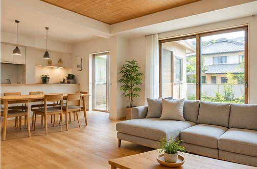
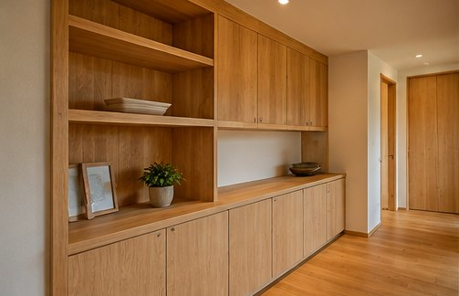
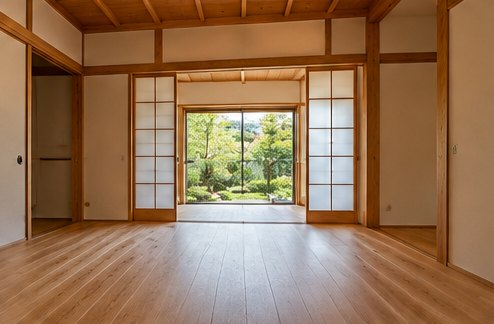
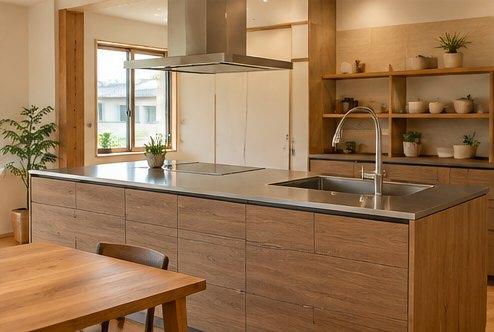

床の傷みが気になったら


床の張り替えの掲載イメージ。実際の工事内容・写真は確認後に掲載します。

家のことを、もっと気軽に。
新築からリフォーム、ちょっとした修繕まで。
一つひとつの住まいに、丁寧に向き合います。
現場の様子や住まいづくりの記録は、
Instagramからご覧いただけます。
@nagasaki_carpenter
Instagramで投稿を見る ↗@nagasaki_carpenter
Instagramで写真を見る ↗
プレビューが表示されない場合は「Instagramで投稿を見る」からご覧ください。
床の傷み、使わなくなった和室、足りない収納。
気になっている場所から、住まいのことを相談してみませんか。
施工事例の掲載準備中です。 以下の3件は、比較の見せ方を確認するための仮の図解です。あらき建築の実際の施工写真・施工実績ではありません。


床の張り替えの掲載イメージ。実際の工事内容・写真は確認後に掲載します。


和室のリフォームの掲載イメージ。実際の工事内容・写真は確認後に掲載します。

造作収納の掲載イメージ。実際の工事内容・写真は確認後に掲載します。
「うちも直せるかな？」と思ったら、気になる場所の写真を添えてご相談ください。
公式ラインで相談
「これって大工さんに頼めるのかな？」
そんな小さな疑問から、気軽に相談できる存在でありたい。
あらき建築は長崎を拠点に、住まいに関わる工事のご相談を承ります。工事の大小にかかわらず、まずはお話を聞かせてください。
お問い合わせはこちら →新築やリフォームから、暮らしの中の小さな困りごとまで。内容に応じてご相談を承ります。
住まいづくりのご相談、木工事・造作工事など。
床・壁・間取りの変更など、暮らしに合わせた住まいの改修。
建具や床まわりなど、気になる箇所のご相談もお気軽に。
住まいづくりから、暮らしに合わせたリフォームまで。木の表情や空間づくりをご覧ください。






新しい現場の様子や日々の仕事は、Instagramからお届けします。

住まいの工事は、つくる人との信頼関係から。ご希望やお困りごとを丁寧に伺い、暮らしに合った方法を一緒に考えます。
住まいのお困りごとについて、まずはお気軽にご相談ください。
連絡先はダミー表示です。 所在地・電話・メールは公開前に正式な情報へ差し替えます。下のGoogleマップは、ご指定の「あらき建築（工場）」へつながります。
「こんなことも頼める？」という段階でも大丈夫です。
工事の内容や気になることを、お気軽にお問い合わせください。
所在地・電話・メールは上の「アクセス・お問い合わせ」に掲載しています（現在はダミー表示）。
公式LINEからお気軽にご相談ください。